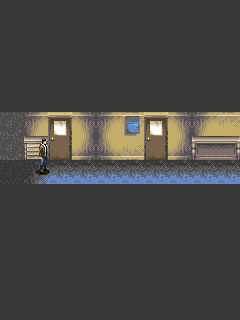

We started Nowhere with Ratchet’s Java ME layer. At the first room transition, the game tried a zero-size drawRegion. That should have done nothing. Our compatibility layer threw an exception instead.NW01
Nothing to draw.
Treating the empty region correctly let the original worker continue. Startup had another ordering requirement: the game started that worker in its constructor, so platform and save state needed to exist before constructing it.NW01

The original 240×320 opening room, with the player at the left. Retained desktop guest output, not a phone screenshot.
Open the image for the full original view.
NW90Without a repaint.
The game could wait for an event without drawing another frame. If we tied input delivery to repaint, input waited too. We used an independent event worker for down/up and visibility events, keeping the game’s update cadence separate from refreshing the UI.NW02
Original controls also resisted a standard softkey assumption. The game used numbered diagonal keys and specific inventory, music and back actions; both original softkeys were ignored. Keeping the raw keypad avoided inventing a conventional action that the game never consumed.NW03NW07
We also tested leaving through original Quit and opening another session in the same process. That meant tearing down the old static state properly. The retained replay follows the game’s own flow through both sessions.NW04NW05NW06
About these records
This is the Sony Ericsson K790 Java ME edition. The empty-region failure and event/lifecycle repairs come from retained original-guest investigations. The image is historical host output. Later Activity fixtures and original gameplay replays keep separate scopes; no current phone comfort or full playthrough is asserted.
The receipts
Selected source lines, investigation notes and recorded feedback. Open a receipt for the original context and scope.
NW01 / Ratchet supplies the layer; zero-size drawing needs a no-opCheckpoint investigation notes
Source: Nowhere_Bridge_v0.1.1_PRIVATE_CHECKPOINT.zip / Nowhere_Bridge_v0.1.1_PRIVATE/IMPLEMENTATION.txt · selected lines 6–17
Original: MainApp MIDlet, MIDP 2.0 / CLDC 1.0, native 240x320. Classes a-j are obfuscated and reuse field names with different descriptors. Reflection-based state evidence must select fields by name AND type, never getField(name) alone. The original i Canvas starts its update thread from MainApp's constructor; initialize platform and save directory before constructing the MIDlet. MIDP implementation reused from the recent Ratchet J2ME work; required Nowhere additions are mutable images, byte-array PNG images, Graphics.clipRect and all 8 drawRegion transformations, Canvas.getGameAction, Display.vibrate acceptance, Player.getState/removePlayerListener, and RMS.getRecord returning bytes. Zero-size drawRegion is a no-op. Treating it as an error killed the original worker at the first room transition; that compatibility defect is fixed.
NW90 / Historical image / NowhereHistorical host capture
Source: Nowhere_Bridge_v0.1.1_PRIVATE/evidence/verified_03_play.png
Retained historical host output. Original emulator chrome, where present, is part of the unchanged source image. No phone capture or phone performance is inferred.
Unchanged historical image. Source member: Nowhere_Bridge_v0.1.1_PRIVATE/evidence/verified_03_play.png SHA-256: 694445dc3cab0876ba0f31786e69f30f7f1705b368cc24fb09daaba5124e8d79 The original 240×320 opening room, with the player at the left. Retained desktop guest output, not a phone screenshot. Scope: Historical original MIDlet host replay using rasterizing graphics backend.
NW02 / The game can wait without repaintingCheckpoint investigation notes
Source: Nowhere_Bridge_v0.1.1_PRIVATE_CHECKPOINT.zip / Nowhere_Bridge_v0.1.1_PRIVATE/IMPLEMENTATION.txt · selected lines 19–28
Native update timing uses Thread.sleep toward 62 ms per update (~16 Hz). The bridge preserves it. Its UI refreshes at 33 ms only to display new frames; repaint's 17 ms ceiling does not accelerate or retime the native update loop. Independent MIDP input event worker drains queued down/up and show/hide events at 8 ms. Delivery cannot depend on repaint: the guest can stop repainting while waiting for events. Preserve original input semantics and lifecycle callbacks. Background gameplay blocks and native hideNotify/showNotify are dispatched. Original game may show a resume prompt. MIDI players pause/resume with visibility. Report generation never acquires a game-state or game-worker monitor.
NW03 / Original diagonals, ignored softkeys and other used keysCheckpoint investigation notes
Source: Nowhere_Bridge_v0.1.1_PRIVATE_CHECKPOINT.zip / Nowhere_Bridge_v0.1.1_PRIVATE/IMPLEMENTATION.txt · selected lines 30–41
Original input mapping evidence: i.keyPressed/keyReleased reject -6/-7. d.a maps 2/4/6/8/5 using getGameAction, preserving diagonals and 0/*/#. f.a(int,Z) encodes 1/3/7/9 as native paired direction bits; 0 uses native bit 128. The original Help confirms 5 attack, 0 inventory/save, # music, * back. See evidence/original_help_01.png. Game resources are packed at APK ZIP root for Java classpath loading. JAR remains intact in original/. Guest patches only resource lookup and caught exception evidence. The MIDlet property adapter supplies its correct original name/version/vendor. Native RMS store savNW is atomic and persists in app files. MediaPlayer receives unchanged original MIDI bytes. Display.vibrate reports a request as accepted, but this bridge does not actuate the phone vibrator.
NW07 / The later controls preserve the native diagonal keysCheckpoint investigation notes
Source: Nowhere_Bridge_v0.1.1_PRIVATE_CHECKPOINT.zip / Nowhere_Bridge_v0.1.1_PRIVATE/README_FIRST.txt · selected lines 7–22
NORMALIZATION Actual shared UI Kit v1.1.1 source is embedded. Icon + NOWHERE + J2ME header, SAVE REPORT and utilities are shared. Digital D-pad supports sliding and sends the original dedicated diagonal keys. Visible ORIGINAL KEYPAD / D-PAD RETURN switch replaces the bottom controls inline while retaining the live viewport. Hardware input ownership survives touch-mode changes. System Back performs original game cleanup and closes the Activity; BACK / * remains an original key. ORIGINAL CONTROLS Directions / 2,4,6,8: move; 1,3,7,9: original diagonals. 5: attack, confirm and advance dialogue. 0: original inventory/save functions. *: original back. #: original music start/stop. The original Help confirms these bindings; i.keyPressed ignores both softkeys. Keypad mode replaces directions because the numeric keypad already supplies them. The original scripted story may restrict movement and items. Controller/keyboard bindings from v0.1.0 are retained; Android Back is separate.
NW04 / Original Quit permits a fresh session in the same processCheckpoint investigation notes
Source: Nowhere_Bridge_v0.1.1_PRIVATE_CHECKPOINT.zip / Nowhere_Bridge_v0.1.1_PRIVATE/IMPLEMENTATION.txt · selected lines 43–51
Original Quit tears down native static state. Engine.get can create a new session in the same Android process after the original MIDlet has ended; MIDP event generation prevents duplicate event workers on relaunch. APK payload checks compare every original resource byte for byte. Host tests exercise raster transforms, clip bounds, all 17 MIDI payloads and RMS persistence. The gameplay replay uses native input only, including opening text, inventory, movement and background/resume. Host audio backend captures original bytes; it does not establish audibility on a physical Android device.
NW05 / The original MIDlet reopens with its own stateHistorical original-guest host log
Source: Nowhere_Bridge_v0.1.1_PRIVATE_CHECKPOINT.zip / Nowhere_Bridge_v0.1.1_PRIVATE/evidence/restart-check.txt · selected lines 1–8
Original MIDlet restarted in same process SNAP original_restarted_menu frames=104 Nowhere Bridge v0.1.0 Original JAR SHA256: dd3278fb4276f6e3218d06b3b5149b680737c80874007c87817291da6f631000 MIDP 2.0 / original 240x320 English Sony Ericsson K790 game frames=56 lastFrameAgeMs=20 active=true ended=false keys=10 pending=0 resourceReads=18 rmsWrites=0 faults=0 audioStarts=1
NW06 / Original-game replay stays distinct from UI fixturesCheckpoint investigation notes
Source: Nowhere_Bridge_v0.1.1_PRIVATE_CHECKPOINT.zip / Nowhere_Bridge_v0.1.1_PRIVATE/VERIFICATION.txt · selected lines 6–8, 19–31
PASS: Original JAR, all 27 APK resource payloads and adapted guest classes retained.
PASS: MIDP compatibility sources unchanged except report version text.
PASS: Existing report export/fallback/retry and audio implementation unchanged.
[... selected excerpt ...]
PASS: Original MIDlet host replay: opening and movement, background/resume,
shutdown/restart with original RMS data; zero final runtime faults.
PASS: Original raster transforms/clip/zero-size regions, 17 MIDI payload formats,
and RMS fresh reopen checks retained and rerun.
Android screenshots are real Views with the execution boundary held for UI-only
validation, so they show a loading viewport. They are not fabricated game proof.
Original-game evidence comes from the independent real MIDlet replay.
Not physically observed for this new APK: phone touch comfort, live Android audio,
Downloads export, native Android teardown, thermal behavior and later chapters.
The control help and original-game evidence remain the authority for bindings;
item/progress-save behavior is not newly claimed as fully verified.